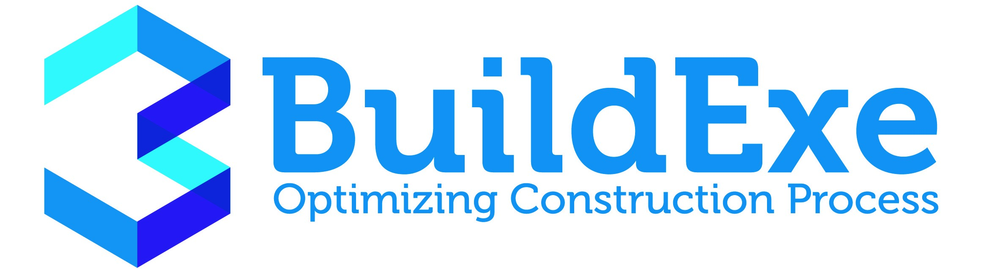

<mat-toolbar class="app-toolbar">
    <div class="left">
        <button style="height: 100%;width: 30px;margin-right: 5px;" mat-icon-button aria-label="menu icon" (click)="sidenav.toggle()">
            <mat-icon style="font-size: 30px;margin-bottom: 23px;" class="btn-toggle">menu</mat-icon>
        </button>
        
    </div>
    <div>
        <button (click)="onLogoutBtnClick()" mat-button class="btn-logout">Logout <mat-icon>power_settings_new
            </mat-icon>
        </button>
    </div>
</mat-toolbar>
<mat-sidenav-container>
    <mat-sidenav mode="side" opened #sidenav>
        <app-sidebar></app-sidebar>
    </mat-sidenav>
    <mat-sidenav-content style="background-color: #fff">
        <router-outlet></router-outlet>
    </mat-sidenav-content>
</mat-sidenav-container>